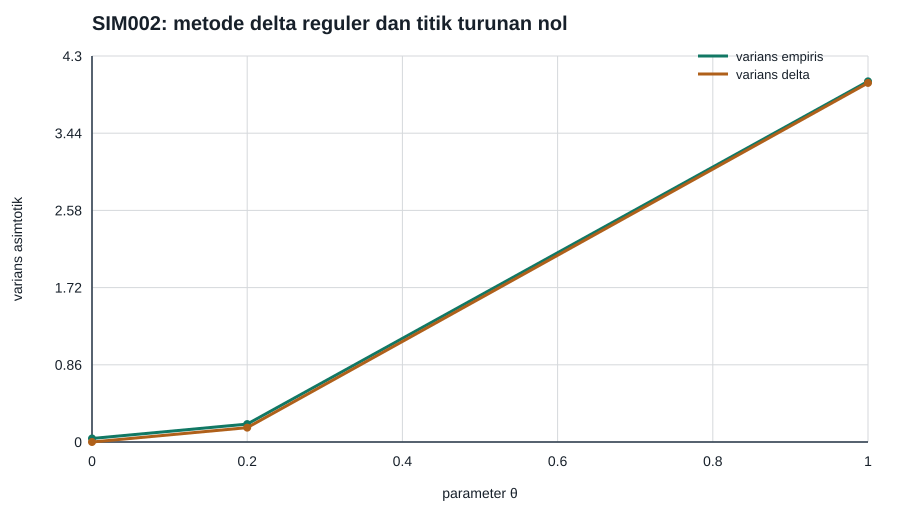

Delta method pada titik reguler dan titik dengan turunan nol
Ambil \(\overline X\sim N(\theta,1/n)\), \(n=50\), dan \(g(\theta)=\theta^2\). Delta method orde pertama memprediksi (\sqrt n{g(\overline X)-g(\theta)}\Rightarrow N(0,4\theta^2)) ketika pendekatan linear tidak degenerat. Konsekuensi dan syaratnya dibahas pada Likelihood kuadratik lokal, normalitas asimtotik, dan delta method dan Prosedur Wald, skor, dan rasio likelihood. Pada \(\theta=0\), \(g'(0)=0\); limit akar-\(n\) merosot menjadi nol dan skala informatif berubah menjadi \(n\overline X^2\), yang berdistribusi \(\chi^2_1\) dalam contoh ini.
Rancangan yang dapat direproduksi
- Seed PCG64:
140002. - Replikasi untuk setiap nilai parameter: 160.000.
- Nilai parameter: \(\theta\in\{0;0{,}2;1\}\).
- Lingkungan terkunci: Python 3.13.9 dan NumPy 2.4.4.
Pada \(\theta=1\), rasio varians empiris terhadap prediksi delta adalah
1,004405. Pada \(\theta=0\), rerata \(n\overline X^2\) adalah 0,996552 dan
kuantil 95%-nya 3,820332, dekat dengan rerata 1 dan kuantil 3,841459 dari
\(\chi^2_1\). Assertion memeriksa kedua rezim secara terpisah; membagi dengan
varians delta nol sengaja dilarang dan dicatat sebagai undefined.

Data: CSV SIM002.
Batas inferensi
Kesesuaian pada \(\theta=1\) tidak menyembuhkan titik \(\theta=0\). Sebelum memakai delta method, selalu evaluasi gradien pada nilai parameter yang relevan; jika gradien nol, cari orde Taylor dan laju yang benar alih-alih melaporkan interval akar-\(n\) yang tampak presisi tetapi tidak informatif.